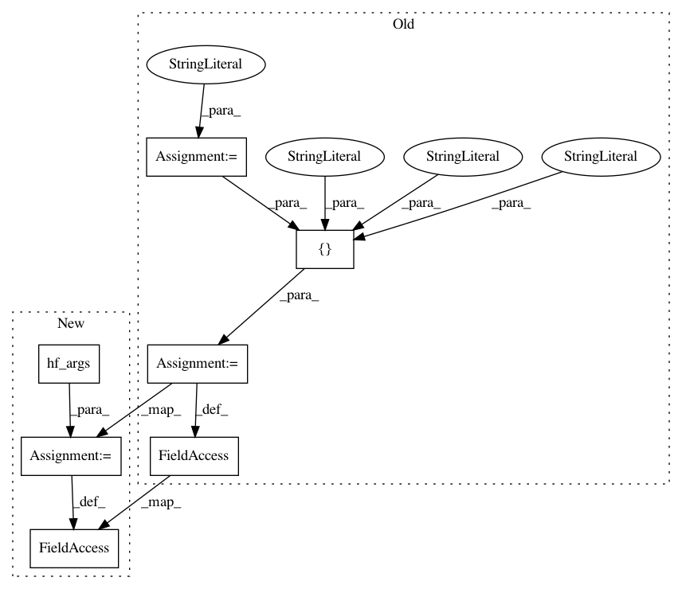

bcf0ba702e15108a6f4df6f3ffb0ee5af5e6baec,tests/test_algorithms_host_footprint.py,,test_predict_num_roles,#,47
Before Change
for file in ["combined_three_roles.csv", "combined_two_roles.csv"]:
input_file = os.path.join(testdata, file)
operation = "train"
k_folds = "2"
sys.argv = ["host_footprint.py", "--operation",
operation, "--kfolds", k_folds, input_file]
instance = HostFootprint()
instance.main()
operation = "predict"
sys.argv = ["host_footprint.py",
After Change
for file in ["combined_three_roles.csv", "combined_two_roles.csv"]:
input_file = os.path.join(testdata, file)
operation = "train"
sys.argv = hf_args(tmpdir, operation, input_file)
instance = HostFootprint()
instance.main()
operation = "predict"
sys.argv = hf_args(tmpdir, operation, input_file)
In pattern: SUPERPATTERN
Frequency: 3
Non-data size: 7
Instances
Project Name: CyberReboot/NetworkML
Commit Name: bcf0ba702e15108a6f4df6f3ffb0ee5af5e6baec
Time: 2020-04-23
Author: josh@vandervecken.com
File Name: tests/test_algorithms_host_footprint.py
Class Name:
Method Name: test_predict_num_roles
Project Name: CyberReboot/NetworkML
Commit Name: fb1ec3126774d4823d1bb2a95d7bcb0c134f7264
Time: 2020-04-19
Author: josh@vandervecken.com
File Name: tests/test_algorithms_host_footprint.py
Class Name:
Method Name: test_predict
Project Name: CyberReboot/NetworkML
Commit Name: fb1ec3126774d4823d1bb2a95d7bcb0c134f7264
Time: 2020-04-19
Author: josh@vandervecken.com
File Name: tests/test_algorithms_host_footprint.py
Class Name:
Method Name: test_train